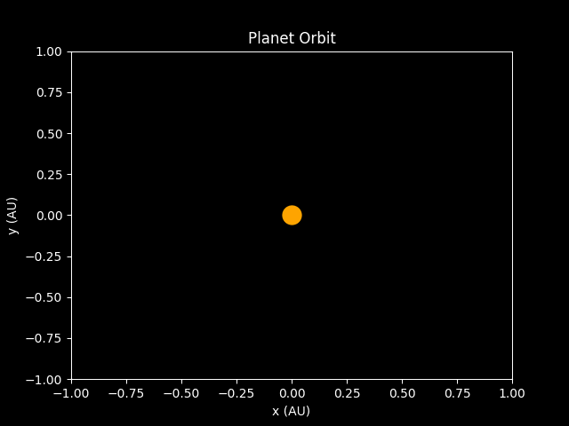

Kepler's Laws
Background
Johannes Kepler was a German astronomer and mathematician who lived in the late 16th and early 17th centuries.
He is best known for his three laws of planetary motion, which describe the motion of planets around the sun. These laws were
developed by Kepler based on careful observations of the motions of the planets over many years. They played a critical role in the
development of modern astronomy and our understanding of the solar system.
Kepler's Three Laws of Orbital Motion
First Law:
Every planet in the solar system moves in an elliptical orbit, with the sun at one of the foci of the ellipse.
An ellipse is a geometric shape that looks like a stretched-out circle. It has two foci, which are points inside the ellipse.
In the case of a planet orbiting the sun, one of the foci is occupied by the sun itself. This means that a planet's distance from the
sun varies over the course of its orbit, and it moves fastest when it is closest to the sun. This can be described mathematically by:

where r is the distance between the planet and the sun, p is the semi-latus rectum, ε is the eccentricity of the ellipse, and θ is the
angle between the line connecting the planet and the sun and the major axis of the ellipse.
Second Law:
The line joining a planet and the sun sweeps out equal areas in equal times.
This law is sometimes called the law of equal areas. It means that a planet moves faster when it is closer to the sun,
and slower when it is farther away. Despite these changes in speed, the planet will sweep out the same area in a given amount
of time as it orbits around the sun. This law is related to the conservation of angular momentum, which states that the product of
an object's moment of inertia and its angular velocity is constant. This is described by:

where A is the area swept out by the line connecting the planet and the sun in a given time, and dA/dt is the rate at which this area is
swept out.
Kepler's Third Law
Third Law:
The square of the period of a planet's orbit is proportional to the cube of the semi-major axis of its orbit.
This law relates a planet's distance from the sun to the time it takes to complete one orbit. The semi-major axis of an ellipse is a
measure of the size of the ellipse, and it is equal to half of the longest diameter of the ellipse. Kepler's third law states that if you
take the time it takes a planet to orbit the sun and square it, that number will be proportional to the cube of the planet's distance from
the sun. In other words, the farther a planet is from the sun, the longer it takes to complete one orbit. This is shown below:

where T is the orbital period, G is the gravitational constant, M is the mass of the sun, and a is the semi-major axis of the planet's orbit.
Orbital Playground
Abandoned Code
This area of the website was designed to house an input field where users could provide values for a planet's and star's radii,
masses, and eccentricities and orbital periods where appropriate, and then see the resulting orbit in a GIF animations
constructed via Python's matplotlib. This was to be done using PyScript, but proved unsuccessful. Instead, I'll include a GIF of what
the orbit generation looks like when the Python code is manually executed for both an Earth-like case and a custom input case.
Earth-like Case
This GIF shows the orbit of a planet with an Earth-like mass, radius and eccentricity, orbiting a star with a mass of 1 solar mass and
a radius of
1 solar radius.
Custom Input Case
This GIF shows the orbit of a planet with a mass of 1.5 Earth masses and a radius of 1.5 Earth radii, eccentricity 0.025, semi-major
axis 1.5AU, orbiting a star with a mass of 1.5 solar masses and a radius of 1.5 solar radii.
These GIFs were generated by the Python code found at the bottom of this page.

Subtle differences include a slower orbital period and a larger semi-major axis.
Code used